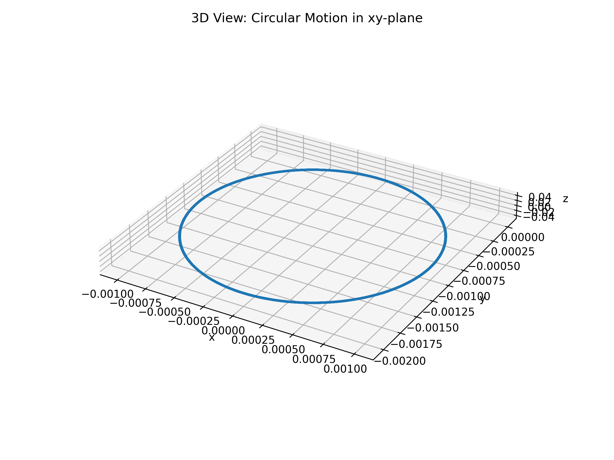
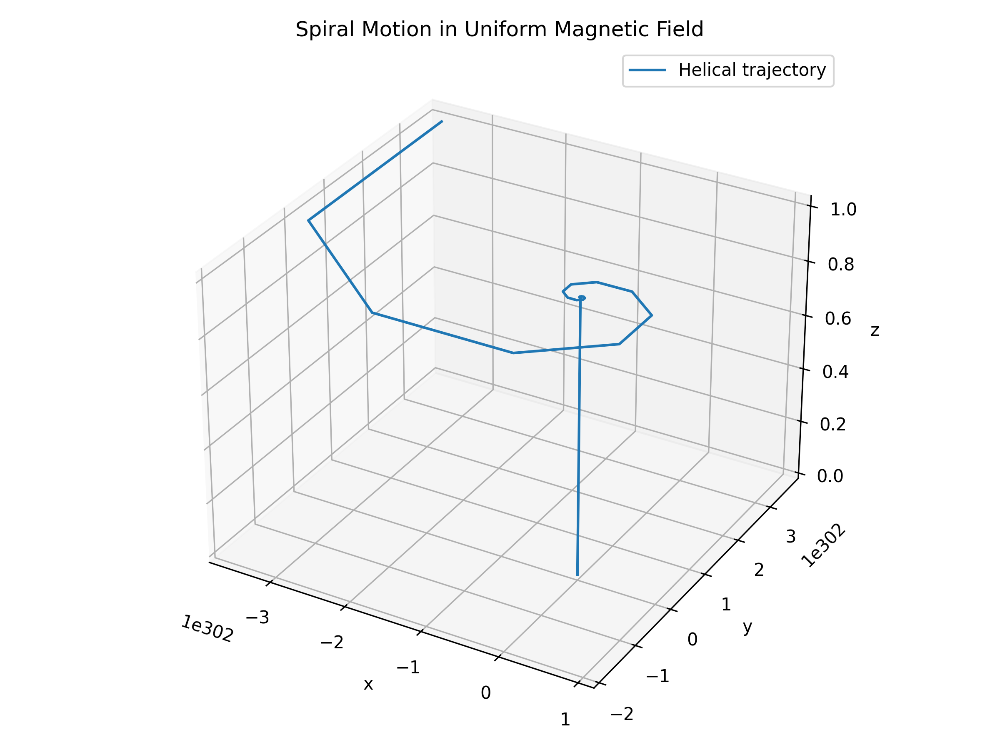
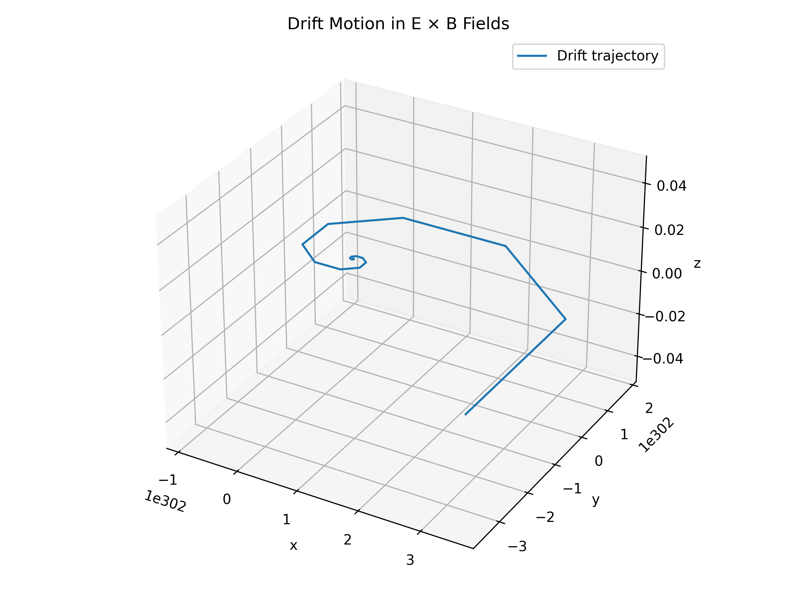

Problem 1: Simulating the Effects of the Lorentz Force
Motivation
The Lorentz force, expressed as F = qE + qv × B, governs the motion of charged particles in electric and magnetic fields. It is foundational in fields like plasma physics, particle accelerators, and astrophysics. Through simulations, we can explore its practical applications and visualize complex particle trajectories.
Task Overview
- Explore Applications
- Particle accelerators
- Mass spectrometers
- Plasma confinement
-
Magnetic traps
-
Simulate Particle Motion
- Under a uniform magnetic field
- Under combined electric and magnetic fields
-
Under crossed electric and magnetic fields
-
Parameter Exploration
- Electric and magnetic field strengths
- Initial velocity
-
Charge and mass
-
Visualize
- Circle
- Spiral in z-direction
- Drift motion
- Include labeled 2D/3D plots
Lorentz Force Simulation: Circular Motion
Introduction
This simulation models the motion of a charged particle in a uniform magnetic field with no electric field. The force is:
F = q (v × B)
This results in circular motion in the x-y plane.
Parameters
- Charge (q): 1 C
- Mass (m): 0.001 kg (1 gram)
- Magnetic Field (B): [0, 0, 1] T
- Initial Velocity: [1, 0, 0] m/s
Output
The following image shows the particle’s circular motion:

Code
import numpy as np
from scipy.integrate import solve_ivp
import matplotlib.pyplot as plt
from mpl_toolkits.mplot3d import Axes3D
# Physical constants
q = 1 # charge
m = 0.001 # mass
qm = q / m
# Lorentz force equation (no electric field)
def lorentz_rhs(t, y):
vx, vy, vz = y[3:]
B = np.array([0, 0, 1]) # uniform magnetic field in z direction
v = np.array([vx, vy, vz])
dvdt = qm * np.cross(v, B)
return [vx, vy, vz, *dvdt]
# Initial condition: purely in xy-plane
y0 = [0, 0, 0, 1, 0, 0] # (x, y, z, vx, vy, vz)
# Time span and sampling
t_span = (0, 0.1)
t_eval = np.linspace(*t_span, 1000)
# Solve ODE
sol = solve_ivp(lorentz_rhs, t_span, y0, t_eval=t_eval)
# 3D Plot
fig = plt.figure(figsize=(8, 6))
ax = fig.add_subplot(111, projection='3d')
ax.plot(sol.y[0], sol.y[1], sol.y[2], lw=2) # x, y, z
ax.set_xlabel('x')
ax.set_ylabel('y')
ax.set_zlabel('z')
ax.set_title('3D View: Circular Motion in xy-plane')
ax.set_box_aspect([1, 1, 0.1]) # Flatten z-axis to emphasize 2D trajectory
plt.tight_layout()
# Save the figure as a PNG file
plt.savefig("circular_motion_3D.png", dpi=300)
# Show the figure
plt.show()
Lorentz Force Simulation: Helical (Spiral) Motion
Introduction
By adding a z-component to the initial velocity, the particle now spirals forward, creating helical motion.
Parameters
- Charge (q): 1 C
- Mass (m): 0.001 kg
- Magnetic Field (B): [0, 0, 1] T
- Initial Velocity: [1, 0, 0.5] m/s
Output
The following image shows the particle’s helical (spiral) motion:

Code
q = 1.0
m = 0.001
B = np.array([0, 0, 1.0])
r0 = np.array([0.0, 0.0, 0.0])
v0 = np.array([1.0, 0.0, 0.5])
dt = 0.001
T = 10
N = int(T / dt)
r = np.zeros((N, 3))
v = np.zeros((N, 3))
t = np.linspace(0, T, N)
r[0], v[0] = r0, v0
for i in range(N - 1):
F = q * np.cross(v[i], B)
a = F / m
v[i + 1] = v[i] + a * dt
r[i + 1] = r[i] + v[i] * dt
fig = plt.figure(figsize=(8, 6))
ax = fig.add_subplot(111, projection='3d')
ax.plot(r[:, 0], r[:, 1], r[:, 2], label='Helical trajectory')
ax.set_xlabel('x'); ax.set_ylabel('y'); ax.set_zlabel('z')
ax.set_title('Spiral Motion in Uniform Magnetic Field')
ax.legend(); plt.tight_layout()
plt.savefig("spiral_motion.png", dpi=300)
plt.show()
Lorentz Force Simulation: Drift Motion (E × B)
Introduction
When a perpendicular electric field is introduced, the particle undergoes circular motion with a net drift in a fixed direction. This is known as E × B drift.
Parameters
- Electric Field (E): [1, 0, 0] V/m
- Magnetic Field (B): [0, 0, 1] T
- Charge (q): 1 C
- Mass (m): 0.001 kg
- Initial Velocity: [0, 1, 0] m/s
- Expected Drift: [0, 1, 0] m/s
Output
The following image shows the particle’s drift motion caused by crossed E and B fields:

Code
q = 1.0
m = 0.001
E = np.array([1.0, 0.0, 0.0])
B = np.array([0.0, 0.0, 1.0])
r0 = np.array([0.0, 0.0, 0.0])
v0 = np.array([0.0, 1.0, 0.0])
dt = 0.001
T = 10
N = int(T / dt)
r = np.zeros((N, 3))
v = np.zeros((N, 3))
t = np.linspace(0, T, N)
r[0], v[0] = r0, v0
for i in range(N - 1):
F = q * (E + np.cross(v[i], B))
a = F / m
v[i + 1] = v[i] + a * dt
r[i + 1] = r[i] + v[i] * dt
fig = plt.figure(figsize=(8, 6))
ax = fig.add_subplot(111, projection='3d')
ax.plot(r[:, 0], r[:, 1], r[:, 2], label='Drift trajectory')
ax.set_xlabel('x'); ax.set_ylabel('y'); ax.set_zlabel('z')
ax.set_title('Drift Motion in E × B Fields')
ax.legend(); plt.tight_layout()
plt.savefig("drift_motion.png", dpi=300)
plt.show()
Summary & Notes
- The circular and helical motions are caused by the magnetic field acting on the charged particle.
- The E × B drift results from crossed electric and magnetic fields.
- All simulations use the Euler method.
- You can extend these simulations to:
- Non-uniform fields
- Multiple particles
- Relativistic speeds
📦 Deliverables
- A Markdown report documenting the physics background and simulation results for the Lorentz force.
- Embedded Python scripts modeling:
- Circular motion
- Helical motion
- E × B drift motion
- Graphical outputs (
.pngfiles) showing particle trajectories under different field configurations: circular_motion.pngspiral_motion.pngdrift_motion.png- Interpretation of results based on field strength, direction, and particle velocity.
🧩 Conclusion
The Lorentz force simulations successfully visualize how charged particles move in response to magnetic and electric fields.
We observed three key behaviors:
- Circular motion under a uniform magnetic field
- Helical motion when the initial velocity has a component along the field
- E × B drift in the presence of perpendicular electric and magnetic fields
These results align with electromagnetic theory and offer insight into the design of devices like cyclotrons, mass spectrometers, and plasma confinement systems.
Overall, the simulations deepen our understanding of particle dynamics and demonstrate how classical physics principles translate into motion.